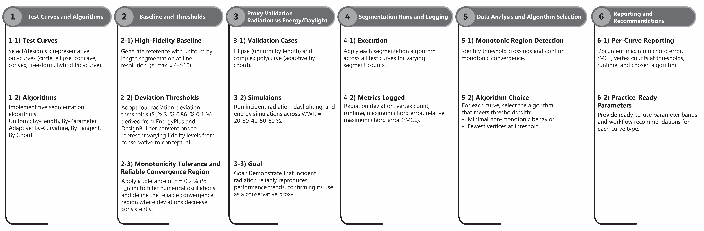
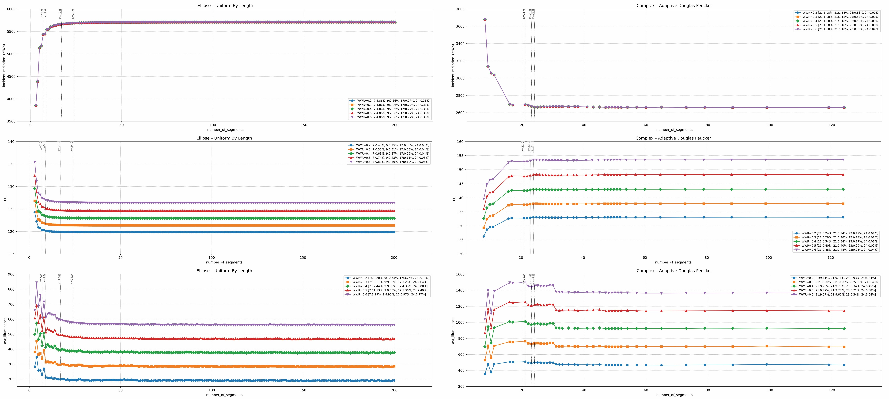

No universal best algorithm
Uniform-by-length is efficient for smooth convex curves; adaptive-by-chord is more robust for hybrid and free-form profiles.
Research software / Geometry preprocessing
A reliability-first workflow for translating curved design geometry into simulation-ready polylines.
When a smooth curve becomes a polyline, how much geometric error is still safe for building-performance simulation?
CurvAdapt controls the deviation itself — using maximum chord error and relative MCE — instead of treating segment count as evidence of accuracy.
NURBS geometry cannot enter many performance engines directly. It is discretized first, often with an arbitrary segment count. The model may look smooth while its deviation, topology, and simulation reliability remain unknown.
CurvAdapt separates segmentation from simplification, preserves real discontinuities, and reports geometric fidelity in a scale-aware form.
Detect domains, duplicate parameters, seams, kinks, and G¹ breakpoints.
Compare uniform and adaptive routines across different curvature behaviours.
Measure MCE and normalize it as rMCE so fidelity can be compared across scale.
Use fast incident-radiation convergence before committing to heavier daylight and energy runs.
Uniform-by-length is efficient for smooth convex curves; adaptive-by-chord is more robust for hybrid and free-form profiles.
More segments do not guarantee a proportionally better approximation and may conceal false convergence.
It retains sensitivity to geometry and strongly tracks annual energy convergence at a fraction of the computation.
Sensor-grid allocation can introduce oscillations that are not caused by the curve itself.

The tested thresholds are evidence from specific curve families, not universal constants. The transferable contribution is the procedure for deriving an appropriate threshold for a new geometry and simulation objective.

The journal review recognized the workflow’s merit while asking for tighter terminology, broader climate testing, stronger sensitivity analysis, and a more modest novelty claim. The paper and plugin are being revised around that reliability-first contribution.
Hossein Nazari — conceptualization, methodology, algorithms, data analysis and original draft. With Shadan Masoud, Abbas Tarkashvand and Mehdi Ghiai.